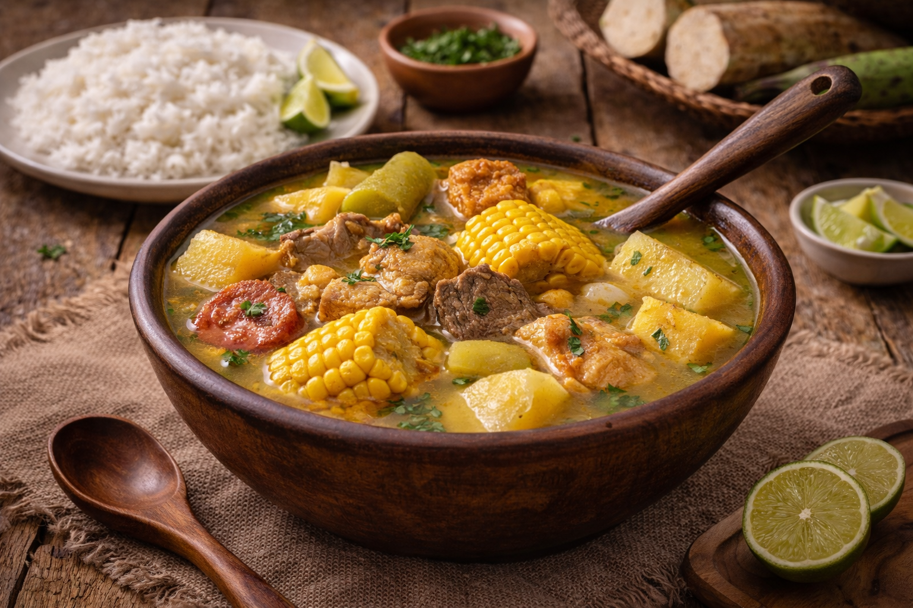
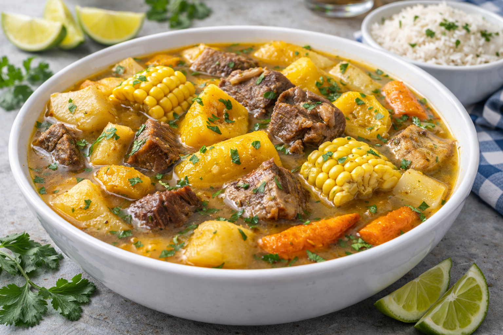

Sancocho is the ultimate Dominican comfort stew — rich, hearty, and traditionally served at family gatherings, holidays, and special celebrations. It’s a thick soup made with a variety of meats and root vegetables slowly simmered together to create deep, savory flavor. The most famous version is “Sancocho de 7 Carnes,” which combines different meats with plantains, yuca, yautía, potatoes, and pumpkin. It’s filling, soulful, and usually served with white rice and avocado on the side.
